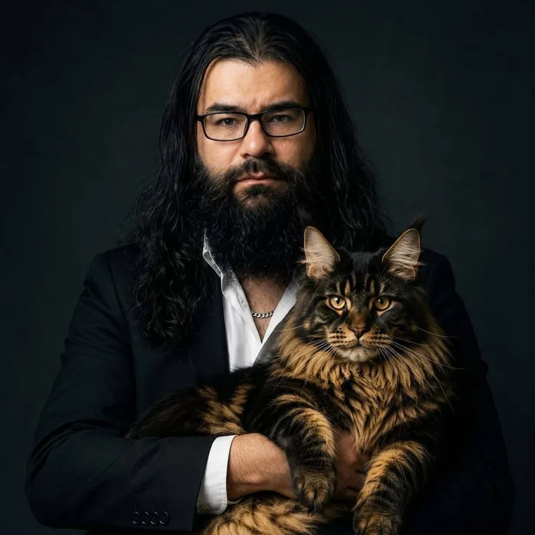

estudio indie · hecho en México
Apps divertidas para todos.
Juegos, herramientas y un poquito de suerte. Hechas con cariño, en tres idiomas y sin cuentas obligatorias.
- 8 APPS
- 3 IDIOMAS
- 0 CUENTAS OBLIGATORIAS
- ∞ MICHIS

el creador
Detrás de Ganddda
A los 16 años soñaba con ser programador y crear mis propios videojuegos. El camino dio una vuelta: primero aprendí arreglando software financiero, donde cada error cuesta dinero real y cada detalle importa.
En el mundo profesional me conocen como «el Doctor» Molina; en los juegos, como Ganddda. Ganddda Studio junta las dos cosas: el oficio de quien arregla sistemas críticos y las ganas de aquel chavo de 16 de hacer apps divertidas para todos.
- alias.profesional
- "el Doctor" Molina
- gamertag
- "Ganddda"
- hecho.en
- México
- sueño.desde
- los 16 años
- apps
- 8 → ∞